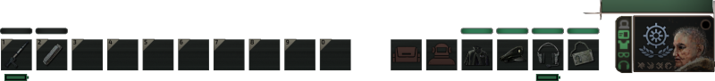

Sobre o jogo
Trama
Barotrauma ocorre em um futuro distante, durante uma era em que a humanidade é tecnologicamente avançada o suficiente para realizar viagens espaciais interplanetárias tripuladas. O cenário do jogo é Europa, uma das luas de Júpiter, que foi colonizada desde a sua chegada inicial em 2022. Ao longo de muitas décadas, colónias e postos avançados foram forçados a estabelecer-se sob a camada de gelo que cobre a superfície da lua, devido para a superfície sendo muito irradiada para sobreviver.
Abaixo da camada de gelo existe um vasto oceano, usado como rede de transporte entre as colônias e como fonte de recursos naturais. O oceano também permitiu a criação de eixos de transporte que interligam as colônias por toda a lua. O próprio oceano é habitado por uma série de criaturas aquáticas, bem como por sistemas de cavernas que se formam naturalmente.
Com o tempo, as colónias de Europa tornaram-se mais distantes e desligadas da Terra, até que há cinquenta anos, algum tempo após a colonização inicial de Europa, todo o contacto foi misteriosamente perdido com o resto da civilização por razões desconhecidas. As pessoas presas em Europa foram deixadas à própria sorte, isoladas da cadeia de abastecimento da Terra. Com recursos limitados e a radiação joviana cada vez mais avançada, os colonos abandonados foram forçados a mergulhar cada vez mais fundo nos vastos e mortais oceanos de Europa.
Objetivo
O objetivo principal no modo de jogo Campanha em Barotrauma é manter e construir um Submarino . Isso é feito contratando e controlando todos os membros da tripulação individualmente. Cada membro da tripulação pode receber um Trabalho específico ; o trabalho escolhido afeta em quais habilidades o personagem se destaca ou tem um desempenho ruim, embora a porcentagem real seja randomizada dentro de um intervalo definido. Além disso, há criaturas aquáticas — indiscutivelmente os antagonistas do jogo — capazes de danificar o submarino e matar membros da tripulação, tanto intencionalmente quanto por consequência de danificar o navio. Defender o submarino dessas criaturas e reparar os danos que elas infligem antes que o navio afunde pode ser considerado o objetivo secundário. O jogo inclui outros Modos de Jogo , com objetivos ou estilos diferentes.
Inventário
O inventário de um membro da tripulação consiste em dezesseis slots
(uniformes médicos têm três
slots
extras) . Seis desses slots são para equipamentos equipados específicos , conforme indicado
pelos
ícones exibidos neles — um slot cada, da esquerda para a direita, para um cinto de ferramentas ,
roupa externa , roupa interna , capacete , fone de ouvido e cartão de identificação . Os outros
dez
slots abrigam quaisquer itens não equipados. Um item pode ser equipado clicando duas vezes em
seu
ícone, clicando na pequena barra acima de seu ícone ou usando a tecla de atalho numerada
atribuída
ao seu slot. O personagem também pode carregar itens em suas mãos se não estiverem cheios de
outros
equipamentos. Alguns itens podem não caber nos slots de inventário devido ao seu tamanho; por
exemplo, os recipientes de armazenamento só podem ser carregados na mão, as caixas exigem as
duas
mãos para serem carregadas e o traje de mergulho pode ser carregado ou usado no slot do
traje.
